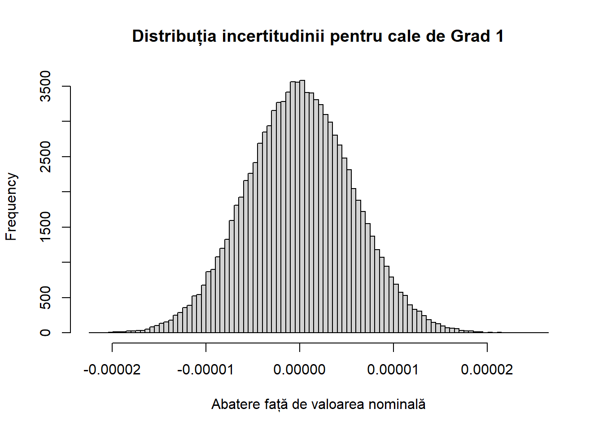
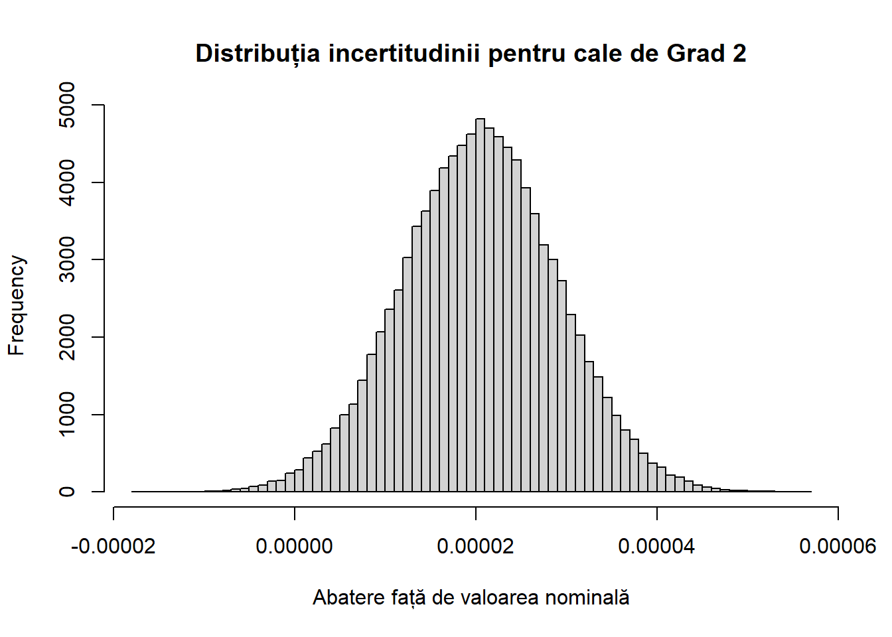

Code
comb <- c(0.1007, 0.134, 1, 2, 3, 4, 0.95, 0.9, 0.85, 0.8, 0.75, 0.7, 0.65, 0.6, 0.55, 0.25)Lucrare de licență - Facultatea de Matematică și Informatică, Universitatea București
Tema lucrării a fost aleasă în urma vizionării videoclipului „Origins of precision”1 al utilizatorului Machine Thinking de pe platforma YouTube. Videoclipul respectiv prezintă sumar dezvoltarea si creșterea preciziei de măsurare de-a lungul istoriei. El se termină cu o problemă deschisă generată de câteva afirmații care sunt prezente pe foaia de prezentare al unui set de cale plan paralele Ford-Johansson.

Mai exact, este vorba despre 2 afirmații făcute aici:
a) „ Folosind piesele acestui set, se pot obține măsuri între 0.1″ și 0.2″ cu pas de 0.001″ și între 0.2″ și 10″ cu pas de 0.0001″ ” (traducere personală din Fig 2.)
b) „ Mai mult de 100 000 de combinații sunt posibile folosind acest set cu 81 de piese ” (traducere personală din Fig 2.)

Topicurile discutate în lucrarea de față se încadrează în 2 domenii matematice:
a) Combinatorică: Probleme de numărare și optimizare
b) Statistică: Evaluarea incertitudinii de măsurare
Pe lângă aceste 2 domenii, lucrarea conține comentarii și precizări de natură istorică și practică.
a) Calele plan paralele
Pentru a înțelege tema, este necesară o scurtă descriere a calelor plan paralele, ce sunt, la ce sunt folosite și cum funcționează ele.
Conform NIST (National Institute of Standards and Technology)2, o cală plan paralelă este o piesă folosită ca standard de lungime ce are 2 laturi opuse plane și paralele.
Calele plan paralele au valori nominale în sistem metric (mm) și în sistem imperial (1 inch = 25.4 mm).
Ele sunt folosite pentru a produce diverse dimensiuni foarte precise care sunt folosite la calibrarea utilajelor industriale sau pentru verificarea instrumentelor de precizie.
Modul prin care aceste dimensiuni sunt obținute se numește „calare” și este una din proprietățile de bază, definitorie a acestor instrumente.

b) Calarea calelor plan paralele
Modul în care diverse dimensiuni pot fi obținute cu aceste cale se numește „calare” și poate fi definit ca procesul prin care două suprafețe aderă strâns una de cealaltă în absența mijloacelor externe (nu sunt magnetizate sau lipite împreună cu un adeziv).
Datorită fețelor lor extrem de plane, când două cale sunt calate, ele se „lipesc”.

Repetând acest proces, pot fi calate consecutiv mai multe cale, obținând diverse dimensiuni.
De exemplu, dacă vrem să obținem dimensiunea de 1.8324″, putem cala împreună următoarele cale:
1.8324 = .1004 + .132 + .6 + 1 (obținem 1.8324 prin calarea a 4 cale)

Motivul pentru care acest fenomen are loc nu este pe deplin înțeles, câteva ipoteze fiind3:
Presiunea aerului din mediul înconjurător, deoarece aerul este presat atunci când blocurile sunt calate împreună.
Tensiunea superficială a uleiului sau a vaporilor de apă din aer acționează ca un lipici pentru a le ține împreună.
Când două suprafețe foarte plane sunt aduse în contact atât de strâns una cu cealaltă, acest lucru permite un schimb de electroni între atomii lor, ceea ce creează o forță moleculară atractivă (această forță va rămâne chiar și în vid sau dacă nu este prezent ulei sau apă pe suprafețe).
c) Setul Ford-Johansson cu 81 de piese
Setul analizat în această lucrare este compus din 81 de piese, aranjate în 4 clase (serii) de mărimi. Componența este următoarea (toate dimensiunile sunt în inch, voi face abstracție de semnul ″):
Seria 1 (9 cale):
.1001, .1002, .1003, .1004, .1005, .1006, .1007, .1008, .1009
Seria 2 (49 cale):
.101, .102, .103, .104, .105, .106, .107, .108, .109, .110, .111, .112, .113, .114, .115, .116, .117, .118, .119, .120, .121, .122, .123, .124, .125, .126, .127, .128, .129, .130, .131, .132, .133, .134, .135, .136, .137, .138, .139, .140, .141, .142, .143, .144, .145, .146, .147, .148, .149
Seria 3 (19 cale):
.050, .100, .150, .200, .250, .300, .350, .400, .450, .500, .550, .600, .650, .700, .750, .800, .850, .900, .950
Seria 4 (4 cale):
1, 2, 3, 4
În total sunt 81 de piese, iar dacă le calăm pe toate împreună obținem (nominal) dimensiunea de 26.5295″. Această informație va fi importantă în această lucrare.

Pornind de la afirmațiile prezentate la punctul 1.1 (1.1.a și 1.1.b), punem următoarele întrebări:
a) Având în vedere concluzia punctului 1.3.1.c (anume că dacă vom cala toate cele 81 de cale vom obține, nominal, dimensiunea de 26.5295″), cum va arăta distribuția dimensiunilor pe care le putem obține în intervalul 0 – 26.5295?
Vom putea obține, cu aceeași rezoluție (aici rezoluție = pas) de 10-4, dimensiuni după ce vom trece de 10″ ?
De exemplu, între 11″ și 20″ putem obține toate numerele mergând cu un pas de 0.0001″ (10-4)? Dar între 20″ și 24″ ? Există vreo dimensiune pe care nu o putem obține?
b) Afirmația 1.1.b ne spune că pot fi obținute peste 100 000 de dimensiuni folosind piesele acestui set.
Care este numărul precis de dimensiuni pe care le putem obține folosind piesele acestui set ?
Pentru a răspunde la întrebările pe care ni le punem este important să avem un punct de plecare, o intuiție inițială. Iar pornind de la aceasta, să demonstrăm riguros veridicitatea sau neveridicitatea ei.
Referitor la întrebarea 1.3.2.a, așteptarea este ca granulația (de 10-4 inch) cu care obținem dimensiuni în intervalul .2″ - 10″ (conform afirmației 1.1.a) să nu se păstreze până la maximul intervalului (26.5295″).
Avem un număr finit (81) de cale iar măsurile pe care le construim sunt din ce în ce mai mari, ceea ce înseamnă că vom folosi din ce în ce mai multe cale. Intuim că la un moment dat nu vom avea destule pentru a putea reprezenta cu aceeași granulație (sau finețe) numerele în intervale mai ridicate (de exemplu 16″ - 22″). Altfel spus, ne așteptăm să existe salturi între anumite numere și o descreștere a distribuției lor.

După satisfacerea curiozităților de natură combinatorică care au pornit de la aceste instrumente, lucrarea își propune să trateze modul în care ele sunt folosite în practică.
Vom intra pe tărâmul metrologiei și vom vedea cum instrumente statistice precum gradul de încredere, distribuția toleranței unei măsurători și a.m.d. sunt folosite pentru a determina precizia unei măsurători.
De asemenea, vom aduce în discuție gradele de precizie și cum putem alege instrumentele potrivite în funcție de precizia măsurătorilor pe care le facem în mod uzual.

Un lucru foarte important pe care acest instrumente l-au asigurat și încă îl asigura este trasabilitatea unei măsurători.
La fel cum în matematică este important să construim demonstrații care au la bază axiomele unui sistem algebric, în metrologie este important să putem să trasăm parcursul unei măsurători până la laboratorul sau cala de precizie cu care a fost realizată.
O măsurătoare trasabilă este una care are un lanț neîntrerupt de etalonări care revin la standardul de referință primar, cu incertitudini calculate pentru fiecare calibrare. Incertitudinea de măsurare este moștenită de-a lungul lanțului de etalonări, astfel încât incertitudinea crește cu cât ne depărtăm de standardul de referință primar. Trasabilitatea de la referința primară, prin laboratoare de metrologie acreditate și până la departamentele de metrologie industrială asigură că toată lumea lucrează la standarde comune și cunoaște aceeași incertitudine a unei măsurători4.
Până la sfârșitul secolului al XIX-lea, ideea pieselor interschimbabile începută de Eli Whitney5 a fost acceptată de națiunile industriale ca model pentru producția industrială.
Unul dintre dezavantajele acestui nou sistem era că necesită un control strict al dimensiunii foarte multor piese diferite. Pentru fiecare erau nevoie de numeroase calibre cu care erau verificate și calibrate diferitele piese din producția industrială. Numărul de astfel de calibre a devenit foarte mare. Natura complexă de producere a lor precum și costurile de întreținere au adus cheltuieli semnificative industriașilor. Pasul major spre simplificarea acestei situații a fost făcut de C.E. Johannson, un mașinist suedez.
Ideea lui Johannson, formulată pentru prima dată în 1896, a fost să facă un set mic de calibre care ar putea fi combinate pentru a forma calibre compozite mai mari și de dimensiuni diverse astfel încât să reducă numărul de calibre necesare. De exemplu, dacă patru calibre de dimensiuni de 1 mm, 2 mm, 4 mm și 8 mm pot fi combinate în orice combinație, toate dimensiunile milimetrice de la 1 mm la 15 mm ar putea fi făcute numai din aceste patru calibre. Johannson a mai descoperit că, dacă două fețe opuse ale unei piese de oțel sunt foarte plane și paralele, acestea s-ar lipi împreună atunci când erau alunecate împreună (eventual ajutate de o cantitate foarte mică de ulei)6. Din această cauză aceste calibre, în România, sunt numite Cale Plan Paralele (în țările vorbitoare de limba engleză ele se numesc Gauge Blocks). În Statele Unite, ideea a fost adoptată cu entuziasm de Henry Ford. Atât de utile au fost pentru fabricile Ford aceste instrumente întrucât, când s-a ivit oportunitatea, Henry Ford a cumpărat fabrica lui C.E. Johansson în care acesta realiza Seturile de Cale Plan Paralele. Ford și Johansson au avut o colaborare reușită iar stima pe care marele industriaș i-o purta inventatorul suedez poate fi înțeleasă astfel: în biroul personal al lui Ford puteau să intre fără programare doar 2 oameni: fiul său și C.E. Johansson. Prin influența pe care Ford o avea, a popularizat utilizarea calelor plan paralele iar, în cele din urmă, acestea au fost adoptate ca standard de transfer pentru lungime în industrie.

Fun fact: La vremea la care le-a creat, erau multe definiții diferite pentru 1 inch și nu era un consens universal. Era inch-ul tâmplarului, cizmarului, bucătarului. Fiind subdiviziunea unei dimensiuni definită după corpul uman (1 foot), este normal ca ea să difere de la loc la loc. Totuși, Johansson a fost primul7 care a stabilit (prin calele sale plan paralele) ca dimensiunea unui inch să fie exact 25.4 mm. Și nu a spus nimănui asta. Ani mai târziu, probabil într-o mare parte datorită calelor plan parelele Johansson, în urma întâlnirilor realizate între 1950 – 1959, laboratoarele de metrologie din Statele Unite, Canada, Anglia, Australia și Africa de Sud au convenit să definească inch-ul ca 25.4 mm.
Pus în termeni simpli, ceea ce vrem să știm este:
Toate numerele, cu până la 4 zecimale, din intervalul [0.2, 26.3295] pot fi reprezentate folosind piese din setul Ford-Johansson cu 81 de cale plan paralele?
Observație: Capetele de început și final, anume [0, 0.2] și [26.3295, 26.5295] le vom trata separat la final deoarece, conform 1.1.a, acolo avem o granulație mai mică.
În orice problemă, este important să începem de undeva cu pași oricât de mici.
Să luăm un număr x din intervalul [0.2, 26.3295], de exemplu 8.2349. Vrem să calibrăm cuțitul de tăiere al unui utilaj astfel încât să rașcheteze precis la distanța de 8.2349 inch față de o placă suport.
Vrem să scădem din acestă dimensiune mărimi din cele enumerate la punctul 1.3.1.c și să ajungem la 0.
Un mod de a face acest lucru este:
Să plecăm de la mic la mare. Scăpăm de zecimale, scăpăm de ultima zecimală și tot așa, iterativ. Practic, facem 0 cifra din dreapta.
| Scăpăm de partea fracționară | ||
|---|---|---|
| 8.2349 | | | - .1009 |
| 8.134 | | | - .134 |
| 8 |
Odată ce nu mai avem zecimale, vom avea un număr natural și putem începe să scădem numerele mari în ordine descrescătoare (începând cu cele din Seria 4 de la punctul 1.3.1.c, apoi Seria 3 și tot așa).
| Scăpăm de partea întreagă | ||
|---|---|---|
| 8 | | | - 4 |
| 4 | | | - 3 |
| 1 | | | - 1 |
| 0 |
Gata. Acum putem lua calele care corespund mărimilor de mai sus, să le calăm și să obținem dimensiunea 8.2349.
4 + 3 + 1 + .1009 + .134 = 8.2349
Am găsit mulțimea {.1009, .134, 1, 3, 4} a cărei sumă face 8.2349
Ar dura prea mult să verificăm toate numerele manual. Neștiind dacă toate aceste numere pot fi obținute din cele 81 de piese, chiar și un script rulat pe calculator va avea probleme – ar putea rula la nesfârșit sau ar putea dura foarte mult până ce găsește combinația potrivită. Să luăm ca exemplu un număr ceva mai mare, 19.3657.
Vrem să verificăm dacă o piesă pe care urmează să o folosim într-un mecanism de mare finețe are lungimea unei laturi precis de 19.3657 inch. Ruleta ne arată 19.4 inch, șublerul ne zice 19.366 (cu toleranță de +/- 0.001 inch), dar noi vrem să fim mai preciși. Când depășim anumite limite de precizie, măsurarea directă nu mai este de mare folos. Asta se întâmplă din cauza toleranțelor implicite pe care instrumentele de măsură (rulete, șublere, micrometre) le au. În acestă situație vom recurge la măsurarea prin comparație. Prin urmare vom folosi un instrument care detectează schimbări cuprinse între 0 și 0.0004 inch (ceas comparator), vom construi dimensiunea respectivă cu cale plan paralele și o vom compara cu piesa noastră (prin glisare pe o suprafață plană).
Pentru a obține numărul, vom folosi aceeași metodă ca mai sus:
| Scăpăm de partea fracționară | ||
|---|---|---|
| 19.3657 | | | - .1007 |
| 19.265 | | | - .115 |
| 19.15 | | | - .15 |
| 19 |
| Scăpăm de partea întreagă | ||
|---|---|---|
| 19 | | | - 4 |
| 15 | | | - 3 |
| 12 | | | - 2 |
| 10 | | | - 1 |
| 9 | | | - .95 |
| 8.05 | | | - .9 |
| 7.15 | | | - .85 |
| 6.3 | | | - .8 |
| 5.5 | | | - .75 |
| 4.75 | | | - .7 |
| 4.05 | | | - .65 |
| 3.4 | | | - .6 |
| 2.8 | | | - .55 |
| 2.25 | | | - .5 |
| 1.75 | | | - .45 |
| 1.3 | | | - .4 |
| 0.9 | | | - .35 |
| 0.55 | | | - .3 |
| 0.25 | | | - .25 |
| 0 |
Vedem că în acest caz am fost norocoși iar calele s-au aliniat bine, chiar în ordine descrescătoare. Față de primul exemplu unde am folosit 5 cale pentru a obține dimensiunea dorită, aici am avut nevoie să folosim 22 de cale!
Această simetrie va fi importantă în continuare.
Definim seriile de mărimi Si conform celor de la punctul 1.3.1.c.
\[Fie\ \mathcal{S}_\mathcal{i},\ i=\overline{1,4},\ multimi\ discrete\ definite\ astfel:\] \[\qquad\mathcal{S}_1=\overline{1,9}\cdot\left(0.0001\right)+\left(0.1\right),\ |\mathcal{S}_1|=9\]
\[\qquad\mathcal{S}_2=\overline{1,49}\cdot\left(0.001\right)+\left(0.1\right),\ |\mathcal{S}_2|=49\]
\[\qquad\mathcal{S}_3=\overline{1,19}\cdot\left(0.05\right),\ |\mathcal{S}_3|=19\]
\[\qquad\mathcal{S}_4=\overline{1,4},\ |\mathcal{S}_4|=4\]
\[Fie\ \mathcal{S}=\bigcup_{i=1}^{4}S_i,\ |\mathcal{S}|=81,\ \ \ \ \ \ \ \ \ Observatie:\sum\mathcal{S}=\sum_{x\in\mathcal{S}}x=26.5295\]
\[Clarificare: Multimea\ \mathcal{S}\ este\ reprezentarea\ setului\ Ford-Johansson\ cu\ 81\ de\ piese\]
\[Fie\ \mathrm{\mathrm{X}}=\{x:x\in\left[0.2,\ 26.3295\right],\ x\cdot{10}^4\in\mathbb{N}\} \tag{2}\]
\[Aratati\ ca\ \forall\ {x}\in\mathrm{X},\ \exists\ \mathrm{S}_x=\{s_1, s_2,...,s_n\}\subseteq\mathcal{S},\ 0\leq{n}\leq81,\ a.i. \] \[\sum\mathrm{S}_x=\sum_{i=1}^{n}s_i=x\]
Din (1) avem că:
\[\displaylines{\forall\ {x}\in\mathrm{X},\ daca\ \exists\ \mathrm{S}_x\subseteq\mathcal{S}\ a.i. \sum\mathrm{S}_x=x\ si\ y:=26.5295-x, \\ atunci\ \exists\ \mathrm{S}_{y}=\mathcal{S}\setminus\mathrm{S}_x\ \ a.i.\ \sum\mathrm{S}_{y}=26.5295-x=y} \tag{3}\]
Exemplu:
\[x=4.5,\ \mathrm{S}_x=\{4, .5\},\ \sum\mathrm{S}_x=4.5=x\]
\[y=26.5295-x=26.5295-4.5=22.0295\]
\[\mathrm{S}_{y}=\mathcal{S}\setminus\mathrm{S}_x,\ \sum\mathrm{S}_{y}=\sum\mathcal{S}-\sum\mathrm{S}_x=26.5295-4.5=22.0295=y\]
Asta înseamnă că putem folosi simetria pentru a reduce la jumătate problema. Această simetrie poate fi văzută ca simetria dintre adunare și scădere. Pentru a obține o dimensiune din prima jumătate a intervalului, pornim de la 0 (nu avem nici o cală) și adunăm cale, iar pentru a obține simetricul acelei dimensiuni, pornim de la maxim (avem toate calele lipite) și scădem aceleași cale pe care le adunasem inițial.

Reamintindu-ne intuiția inițială (punctul 1.3.3) și descrierea realizată în Fig.7, ne dăm seama că acum, cu informația de la punctul anterior, lucrurile vor sta altfel.
Prin urmare, îmbogățim și ajustăm intuiția astfel: poate că după 10″ distribuția dimensiunilor va scădea (trebuie demonstrat acest lucru), dar cu siguranță structura distribuției, per ansamblu, este simetrică față de mijlocul intervalului [0, 26.5295].

Acest lucru ne ușurează sarcina. Considerând adevărată afirmația din alegerea temei (1.1.a), ne rămâne să extindem afirmația 1.1.a de la 10″ până la 13.2647″ și, prin simetrie, va rezulta că toate numerele cu până la 4 zecimale din intervalul [0.2, 26.3295] pot fi obținute cu piese din acest set.
(2) devine:
\[Fie\ \hat{\mathrm{X}}=\{x:x\in\left[0.2,\ 13.2647\right],\ x\cdot{10}^4\in\mathbb{N}\}\]
\[\displaylines{Aratati\ ca\ \forall\ {x}\in\hat{\mathrm{X}},\ \exists\ \mathrm{S}_x=\{s_1, s_2,...,s_n\}\subseteq\mathcal{S},\ 0\leq{n}\leq81,\ a.i. \\ \sum\mathrm{S}_x=\sum_{i=1}^{n}s_i=x} \tag{4}\]
Rezolvare:
Idee:
Arătăm că putem obține un inch complet (aici prin „complet” înțelegem că putem merge „continuu” cu pas de 0.0001).Vom arăta acest lucru pentru intervalul [0.2, 1.1999].
Arătăm că putem obține orice număr natural între 1 și 13 folosind piesele rămase după ce am scos cele pe care le-am folosit la punctul i).
Din i) și ii) rezultă că putem acoperi tot intervalul X.
i.
\(a)\ Aratam\ ca\ (4)\ este\ valabil\ pentru\ intervalul\ [0.2, 0.9999]:\)
\[Fie\ x:=\overline{0.abcd},\ b,c,d\in\overline{0,9},\ a\in\overline{2,9}\]
\(\qquad a.1)\ daca\ d=0,\ continua\ la\ pasul\ a.2),\ altfel:\)
\[\forall\ d\in\overline{1,9},\ \exists\ s_1\in\mathcal{S}_1\ a.i.\]
\[ x_1:=x-s_1=\overline{0.(a-1)bc},\ (a-1)\in\overline{1,8}\]
\(\qquad a.2)\ daca\ \overline{bc}\equiv0\ (mod\ 50),\ continua\ la\ pasul\ a.3),\ altfel:\)
\[\forall\ \overline{bc}\in\overline{1,49},\ \exists\ s_2\in\mathcal{S}_2\ a.i.\]
\[x_2:=x_1-s_2=\begin{cases} \overline{0.(a-2)5}\quad \\ \quad sau \\ \overline{0.(a-2)} \end{cases},\ (a-2)\in\overline{0,7}\]
\(\qquad a.3)\ daca\ x_2=0,\ gata, altfel:\)
\[\forall\ (a-2)\in\overline{0,7},\ \exists\ s_3\in \mathcal{S}_3\ a.i.\] \[x_2-s_3=0\]
\(\qquad Prin\ urmare,\ putem\ construi\ \mathrm{S}_x=\{s_1\in\mathcal{S}_1, s_2\in\mathcal{S}_2, s_3\in\mathcal{S}_3\}\ a.i.\)
\[ \sum\mathrm{S}_x=x,\ \forall\ x\in[0.2, 0.9999]\]
\(\qquad\underline{Observatie}:\ \mathrm{S}_x\ are\ cel\ mult\ 3\ elemente,\ cate\ unul\ din\ \mathcal{S}_1,\ \mathcal{S}_2\ respectiv\ \mathcal{S}_3.\)
\(b)\ Aratam\ ca\ (4)\ este\ valabil\ pentru\ intervalul\ [1, 1.199]:\)
\[Fie\ x:=\overline{1.abcd},\ b,c,d\in\overline{0,9},\ a\in\{0,1\}\]
\(\qquad b.1)\ daca\ d=0,\ continua\ la\ pasul\ b.2),\ altfel:\)
\[\forall\ d\in\overline{1,9},\ \exists\ s_1\in\mathcal{S}_1\ a.i.\]
\[ x_1:=x-s_1=\begin{cases} \overline{0.9bc}\\ \ sau\\ \overline{1.0bc}\end{cases}\]
\(\qquad b.2)\ daca\ \overline{bc}\equiv0\ (mod\ 50),\ continua\ la\ pasul\ b.3),\ altfel:\)
\[\forall\ \overline{bc}\in\overline{1,49},\ \exists\ s_2\in\mathcal{S}_2\ a.i.\]
\[x_2:=x_1-s_2=\begin{cases} \begin{cases}0.85\\sau\\0.8\end{cases}\quad \\ \quad sau \\\begin{cases}0.95\\sau\\0.9\end{cases}\end{cases}\]
\(\qquad b.3)\ \exists\ s_3\in\{.8, .85, .9, .95, 1\}\ a.i.\ x_2-s_3=0\)
\(\qquad Prin\ urmare,\ putem\ construi\ \mathrm{S}_x=\{s_1, s_2, s_3\}\ a.i.\)
\[\sum\mathrm{S}_x=x,\ \forall\ x\in[1, 1.1999]\]
Din a) și b) rezultă că putem construi fiecare număr cu până la 4 zecimale în intervalul [0.2, 1.1999].
ii.
Pentru punctul i) folosim cel mult 3 cale, câte una din Seria 1, Seria 2 sau Seria 3. Asta înseamnă că putem folosi complet Seria 4 = {1, 2, 3, 4} cu care putem genera numerele naturale de la 1 la 10 inclusiv.
Vrem să generăm pe 11, 12 și 13. Facem observația că din Seria 3 folosim doar 1 singură cală la punctul i), prin urmare ne rămân 18 cale în Seria 3 pe care le putem folosi. Remarcăm că putem aranja calele din Seria 3 astfel:
| Gruparea calelor din Seria 3 | |||
|---|---|---|---|
| .05 + .95 = 1 | .1 + .9 = 1 | .15 + .85 = 1 | .2 + .8 = 1 |
| .25 + .75 = 1 | .3 + .7 = 1 | .35 + .65 = 1 | .4 + .6 = 1 |
| .45 + .55 = 1 | .5 |
Prin urmare, vom putea oricând lua 3 astfel de perechi pe care să le adunăm la calele din Seria 4 astfel încât să generăm toate numerele naturale de la 1 la 13.
Acum vom spune că:
\[\ \forall\ x\in\hat{\mathrm{X}}=\{x:x\in\left[0.2,\ 13.2647\right],\ x\cdot{10}^4\in\mathbb{N}\},\]
\[\exists!\ (a,b)\ cu\ a\in\overline{1,13}\ \cup \{0\}\ si\ b\in\{x:x\in[0.2, 1.1999],\ x\cdot10^4\in\mathbb{N}\}\ a.i.\]
\[\begin{cases}a+b=x \\ din\ i):\quad \forall\ b,\ \exists\ \mathrm{S}_b\subseteq\mathcal{S}\ a.i.\ \sum\mathrm{S}_b=b \\ din\ ii):\quad \forall\ a,\ \exists\ \mathrm{S}_a\subseteq\mathcal{S},\ \mathrm{S}_a\cap\mathrm{S}_b=∅\ a.i.\ \sum\mathrm{S}_a=a \end{cases}\quad \Rightarrow\]
\[⇒\ \forall\ x\in\hat{\mathrm{X}},\ \exists\ \mathrm{S}_x=(\mathrm{S}_a\cup\mathrm{S}_b)\subseteq\mathcal{S},\ a.i. \\ \] \[\sum\mathrm{S}_x=\sum\mathrm{S}_a+\sum\mathrm{S}_b=a+b=x \tag{5}\]
Final:
\[\forall\ x\in\hat{\mathrm{X}},\ putem\ construi\ y:=26.5295-x,\ y\in\mathrm{Y}=26.5295-\mathrm{X},\]
\[\mathrm{Y}=\{y:y\in\left[13.2648,\ 26.3295\right],\ y\cdot{10}^4\in\mathbb{N}\}.\]
\[din\ (3):\ \forall\ y\in\mathrm{Y},\ \exists\ \mathrm{S}_y\subseteq\mathcal{S},\ a.i.\ \sum\mathrm{S}_y=y. \tag{6}\]
\[Observam\ ca\ \ \mathrm{Y}\ \cup\ \hat{\mathrm{X}}=\mathrm{X}. \tag{7}\]
\[\displaylines{Din\ (5),\ (6),\ (7)\ ⇒ \forall\ {x}\in\mathrm{X}=\{x:\ x\in[0.2, 26.3295],\ x\cdot10^4\in\mathbb{N}\},\\ \exists\ \mathrm{S}_x=\{s_1, s_2,...,s_n\}\subseteq\mathcal{S},\ 0\leq{n}\leq81,\ a.i. }\] \[\sum\mathrm{S}_x=\sum_{i=1}^{n}s_i=x\]
Ceea ce trebuia demonstrat.
Ca să acoperim complet intervalul [0, 26.5295], mai trebuie să vedem ce se întâmplă pe capete (intervalele [0, 0.2) și (26.3295, 26.5295] ).
Acolo lucrurile sunt mai simple deoarece nu avem o granulație așa de fină. Este în continuare valabilă observația cu simetria.
[0, 0.1) – avem 2 mărimi: 0 și cala de .05 (considerăm 0 ca fiind o mărime valabilă)
[0.1, 0.2) – avem 118 mărimi:
100 de mărimi fiind cele obținute cu calele din Seria 2 și cala de .05:
18 mărimi fiind cele obținute cu calele din Seria 1 și cala de .05:
Am plecat de la aceste 2 afirmații:
„ Folosind piesele acestui set, se pot obține măsuri între 0.1″ și 0.2″ cu pas de 0.001″ și între 0.2″ și 10″ cu pas de 0.0001″ ” (traducere personală din Fig 2.)
„ Mai mult de 100 000 de combinații sunt posibile folosind acest set cu 81 de piese ” (traducere personală din Fig 2.)
Și ne-am propus să le dăm o formă completă. Acum putem spune:
Folosind piesele acestui set, se pot obține:
Măsuri între 0.1″ și 0.2″ cu pas de 0.001″
Măsuri între 0.2″ și 26.3295″ cu pas de 0.0001″
Măsuri între 26.3295″ și 26.5295″ cu pas de 0.001″
Din (0) și (8) putem obține numărul total de mărimi pe care le putem construi cu acest set cu 81 de cale, iar afirmația b) devine:
Cu acest set pot fi construite exact 261 536 mărimi diferite (incluzând mărimea 0)
Pentru a arăta acest lucru a fost foarte importantă vizualizarea problemei și înțelegerea naturii ei simetrice. Putem vedea cum intuiția a evoluat și, pe măsură ce noi observații au fost făcute, intuiția s-a adaptat, a descoperit mai multe unghiuri de a vedea problema.

Remarcăm faptul că oamenii consulați în timpul redactării acestei lucrări aveau același „feeling”, anume că anumite mărimi nu pot fi obținute. Mai mult, videoclipul de la care a plecat această lucrare și care își punea aceleași întrebări, oferă în final său un răspuns legat de numărul total de mărimi ce pot fi obținute cu acest set – 230 6828, număr ce este contrazis de lucrarea mea.
Observăm că demonstrația de mai sus oferă o metodă explicită de a obține o măsură. Spunem că putem obține măsurile din prima jumătate iar cele din jumătatea rămasă sunt, pentru fiecare, totalul minus măsura corespondentă din prima jumătate.

Totuși, acest mod, deși corect, nu oferă tot timpul combinația optimă prin care putem obține o măsură. Prin optim înțelegem combinația care are numărul minim de cale.
De exemplu:
Folosind algoritmul folosit în demonstrația problemei la punctul 2.5, putem obține ultimul număr din prima jumătate, anume 13.2647, în felul următor:
| . | ||
|---|---|---|
| 13.2647 | | | - .1007 |
| 13.164 | | | - .114 |
| 13.05 | | | - .05 |
| 13 | | | - 4 |
| 9 | | | - 3 |
| 6 | | | - 2 |
| 4 | | | - 1 |
| 3 | | | - .95 |
| 2.05 | | | - .9 |
| 1.15 | | | - .85 |
| 0.3 | | | - .3 |
| 0 |
Obținem 13.2647 folosind cele 11 cale de mai sus. Din (3) conform simetriei, numărul 13.2648 = 26.5295 – 13.2647 este obținut de cele 70 de cale rămase nefolosite din setul de 81. Dar acest număr este chiar următorul și putem vedea că poate fi obținut, defapt, tot cu 11 cale, înlocuind cala .1007 cu .1008.
Prin urmare, este legitimă întrebarea:
Cum putem obține combinațiile optime pentru fiecare număr?
Vrem ca atunci când construim o măsura, să folosim combinația care are cele mai puține cale în compoziție. Acest lucru este de dorit mai ales din motive practice. Este mai ușor să calăm un număr mai mic de piese decât unul mai mare. De asemenea, aceste piese de mare precizie, calele plan paralele, au totuși niște toleranțe. În funcție de gradul de precizie din care fac parte, calarea mai multor cale va scădea gradul de încredere al acurateței combinației.
Din nou, este important să simplificăm problema. Uitându-ne la seria cu cele mai mari cale, Seria 4, are calele: 1, 2, 3, 4. Ce este o combinație optimă pentru acest set?
De exemplu:
Cu piesele din {1, 2, 3, 4} putem obține mulțimea {1, 2, 3, 4, 5, 6, 7, 8, 9, 10}.
Să spunem că vrem să-l construim pe 8.
8 nu se află în S4 = {1, 2, 3, 4}, mergem mai departe
Facem combinații de câte două elemente și verificăm la cât sumează. Cu mențiunea că nu ne interesează valorile pe care le-am verificat deja la pasul anterior.
{1,2} = 3, {1,3} = 4, {1,4} = 5, {2,3} = 5, {2,4} = 6, {3,4} = 7
Tot nu îl găsim pe 8. Mergem mai departe
Facem combinații de câte trei elemente și verificăm la cât sumează.
{1,3,4} = 8, {2, 3, 4} = 9
Gata, l-am găsit pe 8, poate fi construit cu {1,3,4}

Observație:
Această metodă de parcurgere implică, defapt, parcurgerea pe nivele a „power-setului” lui S4, în acest caz o mulțime cu 2S4 = 2|S4| = 24 = 16 submulțimi.
Generalizând acest raționament, pentru un număr construibil x, combinația optimă va fi primul nivel din arborele generat de 𝒫(S) (unde S este setul de 81 de piese) în care găsim mulțimea care sumează la x. „Etajul” la care ne vom afla va fi numărul de cale pe care le va avea combinația, iar acest număr va fi minim, prin urmare combinația va fi optimă.
Ca să găsim combinația optimă a unui nr construibil x, pașii pe care îi vom face vor fi:
Caută-l pe x în mulțimea inițială. Dacă existră – stop, altfel continuă:
Caută-l pe x în mulțimea sumelor submulțimilor de 2 elemente.
Caută-l pe x în mulțimea sumelor submulțimilor de 3 elemente.
Tot așa, continuă până îl găsești pe x.
Dar în cazul setului nostru ar însemnă să trecem prin până la 281 mulțimi, ceea ce este mult.
Întorcându-ne la demonstrație, la punctul 2.5 am arătat că putem construi 1 inch complet din maxim 3 piese.
Deci un număr va fi construit din: (maxim 3 piese) + piesele cu care construim partea întreagă.
Din nou, vorbim despre o abordare în 2 pași:
Construim partea fracționară cu maxim 3 piese
Construim partea întreagă
Înainte de a scrie pseudocodul va trebui să clarificăm faptul că este necesar ca cele 4 serii de mărimi să fie definite ca 4 liste/vectori și să fie ordonate crescător. Primul element din listă are indicele 0.
Definim s1, s2, s3, s4 conform 1.3.1 punctul c) (aici s1 ~ set1, șamd).
set1 = [x/10000 for x in range(1001, 1010)]
set2 = [x/10000 for x in range(1010, 1491, 10)]
set3 = [x/10000 for x in range(500, 9501, 500)]
set4 = [1, 2, 3, 4]
ss = set1 + set2 + set3 + set4Folosim pașii pe care i-am folosit în demonstrație :
1. def funcție(nr, s1, s2, s3, s4):
2. comb = listă goală
3. n1 = (ultima cifra a lui nr) - 1
4. daca n1 != -1:
5. scade piesa s1[n1] din nr
6. adaugă s1[n1] în comb
7. elimina s1[n1] din s1
8. n2 = ((ultimele 2 cifre ale lui nr) modulo 50) – 1
9. daca n2 != -1:
10. scade piesa s2[n2] din nr
11. adaugă s2[n2] în comb
12. elimina s2[n2] din s2
13. n3 = ((ultimele 2 cifre ale lui nr)/5) – 1
14. daca n3 != -1:
15. scade piesa s3[n3] din nr
16. adaugă s3[n3] în comb
17. elimina s3[n3] din s3
În acest moment variabila nr va fi sigur un număr întreg.
# functia are parametrii numarul tinta si cele 4 serii de cale
def func(nr, s1, s2, s3, s4):
# aici 23.4 este limita obtinuta empiric de unde este mai
# eficient (ca timp) sa construiesti numarul prin
# construirea diferentei 26.5295-nr
if nr<23.4:
comb = []
n1 = round(nr*10000)%10-1
if n1!=-1:
nr = round(nr-s1[n1], 5)
comb.append(s1[n1])
del s1[n1]
n2 = round(nr*1000)%50-1
if n2!=-1:
nr = round(nr-s2[n2], 5)
comb.append(s2[n2])
del s2[n2]
n3 = round((round(nr*100)%100)/5)-1
if n3!=-1 and n3<20:
nr = round(nr-s3[n3], 5)
comb.append(s3[n3])
del s3[n3]
# Pana aici am scapat de numerele de dupa virgulaPentru partea întreagă:
Vom merge pe cazuri:
Partea întreagă =< 10. Folosim Seria 4 = S4 = {1, 2, 3, 4}
Conform Fig.13 am putea începe cu piese mari și să facem power setul Seriei 4. Va fi o metodă care va funcționa.
Dar în acest caz putem folosi o proprietate a Seriei 4:
Această proprietate este importantă pentru că ne dă posibilitatea să construim direct mulțimea unui număr întreg, fără a mai fi nevoie să căutăm acea mulțime în arborele descris mai sus.
Exemplu:
Avem S4 = {1,2,3,4} – vrem să-l căutăm pe 8:
Care este prima piesă din S4 = {1, 2, 3, 4} care este =< 8 ?
Răspuns: 4. Scădem pe 4 din 8 și eliminăm 4 din S4.
Care este prima piesă din S4 = {1,2,3} care este =< 4 ?
Răspuns: 3. Scădem pe 3 din 4 și eliminăm pe 3 din S4.
Care este prima piesă din S4 = {1,2} care este =< 1 ?
Răspuns: 1. Scădem pe 1 din 1 și am ajuns la 0.
Această metodă va funcționa tot timpul și este mai eficientă din punctul de vedere al timpului de execuție.
Obs.: Dacă partea întreagă este mai mare decât 10, folosim complet Seria 4.
1. dacă nr >= 10:
2. scade 10 din nr
3. adauga s4 în comb
4. altfel:
5. pentru i în [0, 1, 2, 3]:
6. dacă nr > s4[3-i]:
7. scade piesa s4[3-i] din nr
8. adaugă s4[3-i] în comb
if nr>=10 or 10-nr<10**(-5):
comb.extend(s4)
nr = round(nr-10, 5)
else:
for i in [0, 1, 2, 3]:
if nr>=s4[3-i] or s4[3-i]-nr<10**(-5):
nr = round(nr-s4[3-i], 5)
comb.append(s4[3-i])
if nr==0:
return(comb)Partea întreagă =< ~ 19.5.
După ce epuizăm Seria 4, trecem la:
Seria 3 = {.050, .100, .150, .200, .250, .300, .350, .400, .450, .500, .550, .600, .650, .700, .750, .800, .850, .900, .950}
Această serie are mai multe cale decât Seria 4, dar structura este asemănătoare. Dacă dăm factor comun .05, Seria 3 devine:
Seria 3 = .05*{1, 2, 3, 4, 5, 6, 7, 8, 9, 10, 11, 12, 13, 14, 15, 16, 17, 18, 19}
Pentru că această mulțime are proprietatea (9), vom proceda asemănător.
if nr>=sum(s3) or sum(s3)-nr<10**(-5):
comb.extend(s3)
nr = round(nr-sum(s3), 5)
s3=[]
else:
while nr>10**(-5) and len(s3)!=0:
m3 = list(filter(lambda i: s3[i] <= nr+10**(-5), range(len(s3))))[-1]
nr = round(nr-s3[m3], 5)Obs.: Este probabil ca în acest moment Seria 3 să nu fie completă și o piesă să fi fost folosită la punctul i) anterior. Acest lucru poate da naștere unor cazuri particulare precum:
Am scăzând descrescător piese din S3 până am ajuns la piesa .35 iar nr = .4
Dacă voi scădea .35 din .4 voi rămâne cu .05. Dacă am folosit .05 în prima parte (punctul i ), atunci nu voi avea cum să obțin acel .05 cu nimic altceva (este cea mai mică piesă). Ideea e să te întorci și să continui cu .3 în loc de .35 și apoi cu .1
if round(nr-s3[0], 3)<0 and nr>10**(-5):
nr = round(nr + s3[m3], 5)
m3 -= 1
nr = round(nr- s3[m3], 5)
comb.append(s3[m3])
del s3[m3]Cu punctele ii.a) și ii.b) descrise până acum putem construi eficient și optim numere până la aprox. ~ 19.5.
Pentru numere mai mari, metodele pe care le-am folosit nu vor mai funcționa.
Partea întreagă >= ~ 19.5
În acest punct, putem recurge la metoda recursivă descrisă în Fig.13
Natura recursivă a acestei probleme împreună cu posibilitatea de a împărți problema în subprobleme ne indică să căutăm în direcția algoritmilor dinamici.
Căutând informații despre acest tip de probleme, aflăm următorul lucru:
Problema noastră, obținerea unei submulțimi care sumează la un număr dat, este un caz particular al problemei Knapsack9
Pe scurt, problema Knapsack spune:
Având o mulțime de obiecte, fiecare cu o greutate și o valoare, ce combinație va umple un ghiozdan ce poate suporta o greutate maximă (knapsack), maximizând greutatea și valoarea?
Acest caz particular se numește Subset Sum Problem10 și spune, pe scurt:
Dată o mulțime de numere și un număr țintă T, răspunde la întrebarea:
Există o submulțime a cărei sumă este exact T ?
Mai precis, Subset Sum este o problemă Knapsack în care greutatea și valoarea sunt egale.
Acest probleme fac parte din clasa problemelor NP-complete. Ele sunt dintre cele mai dificil de rezolvat (la modul general, algoritmic) deoarece timpul de rulare crește exponențial.
Căutând online, găsim diverși algoritmi pentru Knapsack Problem. Lucrarea folosește un astfel de algoritm care este adaptat la problema în cauză.
Strategia va fi:
Dacă numărul pe care vrem să-l obținem epuizează Seria 3 și trebuie să folosească piese din Seria 2, atunci vom folosi algoritmul dinamic pentru a găsi combinația potrivită.
Trecerea va fi o punte între algoritmul prezentat până acum și cel dinamic. Puntea tratează cazurile particulare care apar la limite.
# de aici incolo , pentru numere mai mari de aprox 19.7 va fi nevoie sa folosim blocuri din
# Seria 2, serie care are cele mai multe blocuri iar faptul ca elementele ei nu sunt multipli unul fata
# de celalalt, nu merge sa folosim tot o metoda Greedy optimizata.
# Din acest motiv voi folosi un algoritm dinamic pe care l-am gasit pe internet si l-am adaptat problemei mele.
# Algoritmul in cauza este folosit pentru a rezolva o problema de tip Knapsack.
# Problema pe care o descriu eu aici este similara cu o problema de tip Subset Sum, care
# este un caz particular al problemei Knapsack.
if nr<10**(-5):
return comb
else:
# aici o heuristica care regleaza cazurile limita
# de la trecerea dintre Seria 3 si Seria 2
if round(nr, 4)<0.25:
k = round(.25-nr, 5)
nr = round(nr+ k, 5)
comb.remove(k)
elif abs(nr-.3)<10**(-5):
k = round(.35-nr, 5)
nr = round(nr+k, 5)
comb.remove(k)
s1 = [int(round(x*10000, 5)) for x in s1][::-1]
s2 = [int(round(x*10000, 5)) for x in s2][::-1]
s3 = [int(round(x*10000, 5)) for x in s3][::-1]
s = s3+s2+s1
nr = int(round(nr*10000))
comb.extend([x/10000 for x in printknapSack(nr, s, s, len(s))])
return combPartea de mai sus reprezintă puntea dintre algoritmul meu și cel dinamic. Algoritmul dinamic este apelat în penultimul rând prin funcția printkanpSack().
# The next part of the code is contributed by Aryan Garg
# Python3 code for Dynamic Programming
# based solution for 0-1 Knapsack problem
# Prints the items which are put in a
# knapsack of capacity W
def printknapSack(W, wt, val, n):
K = [[0 for w in range(W + 1)]
for i in range(n + 1)]
# Build table K[][] in bottom
# up manner
for i in range(n + 1):
for w in range(W + 1):
if i == 0 or w == 0:
K[i][w] = 0
elif wt[i - 1] <= w:
K[i][w] = max(val[i - 1]
+ K[i - 1][w - wt[i - 1]],
K[i - 1][w])
else:
K[i][w] = K[i - 1][w]
# stores the result of Knapsack
res = K[n][W]
w = W
lst = []
for i in range(n, 0, -1):
if res <= 0:
break
# either the result comes from the
# top (K[i-1][w]) or from (val[i-1]
# + K[i-1] [w-wt[i-1]]) as in Knapsack
# table. If it comes from the latter
# one/ it means the item is included.
if res == K[i - 1][w]:
continue
else:
# This item is included.
#print(wt[i - 1])
lst.append(wt[i-1])
# Since this weight is included
# its value is deducted
res = res - val[i - 1]
w = w - wt[i - 1]
return lstPartea de mai sus este algoritmul dinamic luat de pe geeksforgeeks11.
Algoritmul poate fi consultat și testat aici.
https://colab.research.google.com/drive/1UwWaqUNZ_lxWgTIHWWyp83AD7eGe1tR#scrollTo=Q9zq9xZAVJCp

Am aplicat acest algoritm pe un fișier .csv în care am pus, în ordine crescătoare, toate cele 261536 de măsuri ce pot fi construite folosind setul cu 81 de cale plan paralele.
Folosind acest fișier, am creat o aplicație interactivă ShinyLive prin care oricine poate introduce un număr și, dacă el este valid, va primi combinația optimă. O puteți găsi pe această pagină în tabul GaugeBlock Finder.
https://vladmarianciuc.github.io/gauge-block-study/


Se observă natură liniară pe intervale a acestei distribuții. Mai precis, exact pe intervalele care coincid cu Seriile de cale pe care le folosim. Pentru fiecare interval putem construi un model de regresie liniară simplă și să unim rezultatele într-o funcție generală de interpolare.
Acest lucru corespunde cu intuiția. Este normal ca distribuția să arate astfel întrucât folosim treptat cale din cele 4 serii până ce epuizăm fiecare serie. Mai mult, pantele interpolărilor pe intervale corespund granulației seriilor.
Vedem o pantă lină pentru seria 4: adică putem obține o plajă largă de numere (pentru că avem calele de dimensiuni mari: 1, 2, 3, 4). O pantă mai abruptă pe intervalul 10-19.5, ce corespunde Seriei 3 și o pantă foarte abruptă după 19.5 – lucru ce se datorează granulației semnificativ mai mici a calelor din Seria 2.
Știința care se ocupă cu măsurători se numește metrologie. Ea are un rol semnificativ în domenii medicale, de cercetare, în producție și design. Un aspect cheie în metrologie este stabilirea acurateței unei măsurători, definirea unor grade de precizie și crearea unor metode și standarde internaționale. Faimosul Sistem Internațional a fost unul din acestea iar astăzi avem standardele ISO (dar și altele).12
Este important să înțelegem că nici o măsură nu este exactă sau precisă. Acest lucru este, defapt, un alt fel de a spune că probabilitatea de a alege un număr rațional este 0 și că probabilitatea de a alege un număr irațional este 1.
De exemplu: Uitându-ne la Fig.18 vedem că avem un creion lângă o linie gradată cu cm și fiecare cm este împărțit în alte 10 gradații (mm). Putem spune rapid că acel creion are cam 4 cm. Putem să mijim mai mult ochii și să spunem că are cam 4.2. Putem fi puțin pedanți și să spunem chiar 4.25! Dar chiar și așa, afirmația noastră tot va conține acel cam. Corect este să spunem 4.25 +/- o toleranță.
Toleranța este o caracteristică a instrumentului cu care este realizată măsurătoarea iar în funcție de precizia la care dorim să lucrăm, ne alegem instrumentele de măsură care au toleranțe acceptabile. De exemplu, dacă realizez un gard de împrejmuire s-ar putea să fie bună o ruletă mare cu diviziuni din cm în cm și care are toleranța de +/- .5 cm. Dar dacă vreau să chertez 2 grinzi din lemn și doresc o îmbinare perfectă, voi avea nevoie de o ruletă mai mică cu diviziuni din mm în mm și cu toleranță mai mică de +/- .5 mm.
De aici vine incertitudinea unei măsurători. Iar legat de incertitudine este conceptul de încredere. Gândindu-ne din nou la creionul din Fig.18, putem spune că are 4.2 cm +/- 0.5 mm. În felul acesta încadrăm incertitudinea în niște limite. Dar putem să spunem că creionul are 4.2 cm +/- 1 mm. Cu cât sunt mai mari limitele în care încadrăm incertitudinea, cu atât este mai mare încrederea noastră că acestea cuprind valoarea „adevărată”. Aș putea, deci, să mă uit la acel creion și să spun că sunt 75% sigur că are 4.2 cm +/- 0.5 mm sau aș putea spune că sunt 90% sigur că are 4.2 cm +/- 1 mm.13

Lungimea unei cale plan paralelă este definită în relație cu următoarele condiții de referință standard:14
temperatura = 20 ºC (68 ºF)
presiune barometrică = 101.325 Pa (1 atmosferă)
presiunea vaporilor de apă = 1.333 Pa (10 mm de mercur)
Conținutul de CO2 al aerului = 0.03%
Dintre aceste condiții doar temperatura are un efect măsurabil asupra lungimii fizice a blocului. Celelalte condiții sunt necesare deoarece măsurarea primară a lungimii blocului de măsurare este o comparație cu lungimea de undă a luminii.
Capacitatea de calare a calelor este o mărturie privind integritatea stării suprafeței lor.
Dacă niște cale plan paralele nu pot fi calate cu ușurință, atunci ele pot da rezultate neregulate pe care nu te poți baza.
Grosimea stratului de calare dintre 2 cale este de 25 nanometri ~ 0.98 μin15. Iar această dimensiune este incorporată în lungimea calei în sine. Valoarea nominală a unei cale este definită în condițiile de la 4.1.1 prin măsurare interferometrică atunci când blocul este deja calat pe o placă plană de referință. Prin urmare, grosimea stratului de calare este inclusă în valoarea nominală a calei!16

Această definiție este foarte utilă, deoarece atunci când calele sunt asamblate în diferite combinații, nu trebuie adăugat niciun factor de corecție suplimentar pentru grosimile straturilor de calare.
Conform NIST (National Institude of Standards and Technology)17, există 4 grade de toleranță:
Gradul 0.5
Gradul 1
Gradul 2
Gradul 3
Calele din gradele 0.5 și 1 au lungimi foarte apropiate de valorile lor nominale. Acestea sunt utilizate de obicei ca referință pentru a calibra alte cale de grade mai mici. Clasele 2 și 3 sunt de calitate inferioară și sunt utilizate în scopuri de măsurare, ateliere mecanice, mașinisti șamd.

Citind acest tabel aflăm despre calele de grad 0.5:
calele mai mici de 1 inch au lungimea reală în interval de +/- 1 µin față de cea nominală
cala de 2 inch are lungimea reală în interval de +/-1 µin față de cea nominală, șamd.
De exemplu:
O cală de grad 0.5 care are lungimea nominală de 0.1008 inch are lungimea reală cuprinsă în intervalul: [0.100801, 0.100799]
Aceeași cală, dar de grad 3, va avea lungimea reală cuprinsă în intervalul: [0.100808, 0.100796]
Observație:
Considerând aspectele tehnice menționate mai sus, apare întrebarea:
În funcție de gradul de toleranță, câte cale pot cala astfel încât să fiu rezonabil de sigur că valoarea nominală se află într-un interval de încredere satisfăcător?
De exemplu:
Avem nevoie de să setăm freza unei mașini de găurire la 17.2347 inch față de o placă plană de referință.
Folosind algoritmul prezentat mai sus, vedem că pentru a obține această măsură avem nevoie de 16 cale:
[0.1007, 0.134, 1, 2, 3, 4, 0.95, 0.9, 0.85, 0.8, 0.75, 0.7, 0.65, 0.6, 0.55, 0.25]
Avem un set de cale plan paralele de grad 1, unul de grad 2 și unul de grad 3. Vrem ca toleranța combinației pe care o vom folosi să fie mai mică de +/- 0.00005. Și vrem să fim 95% siguri că măsura reală se va situa în intervalul de sus.
Ce alegem? Sau cum?
Pentru a putea răspunde la întrebarea de mai sus va trebui să creăm un model.
Incertitudinea unei măsurători poate fi modelată printr-o distribuție normală. Ea poate fi modelată și prin alte distribuții precum distribuția log-normală sau gamma.
Avantajele distribuției normale sunt:
Este des întâlnită în natură. Sau mai precis, în multe scenarii din lumea reală, datele nu urmează o distribuție normală, iar comportamentul lor matematic poate fi destul de complex. Dar Teorema de Limită Centrală ne permite să tratăm distribuția eșantioanelor ca fiind aproximativ normală, făcând analiza statistică mult mai gestionabilă și fezabilă.
Este ușor de înțeles, este simetrică, potrivită pentru modelarea unor toleranțe centrate simetric.
Știm că pentru o deviație standard avem încredere de 67%, pentru două deviații standard avem încredere de 95%, pentru 3 deviații standard: încredere de 99,7%.

Pentru că ne dorim să știm că în 95% din cazuri lungimea reală se va afla în intervalul de toleranță din tabelul de la Fig.19, pentru fiecare cală în parte vom crea o variabilă aleatoare a cărei toleranță să corespundă cu două abateri standard.
Vom considera fiecare cală dintr-o combinație ca pe o variabilă aleatoare i.i.d.
Vom aduna fiecare variabilă i.i.d. și, pentru că toate sunt distribuite după o normală, suma lor va fi tot o distribuție normală. Mai mult, aceasta va reprezenta, defapt, „gradul de toleranță a acelei combinații specifice”.
Ne rămâne să calculăm deviația standard a acestei noi distribuții și să generăm intervalul în care vom ști că, în 95% din cazuri, se află lungimea reală o combinației de cale pe care le vom cala.
\[fie\ \mathrm{S}_x⊆\mathcal{S}\ a.i.\ \sum\mathrm{S}_x=x,\ \mathrm{S}_x=\{s_1,s_2,...,s_n\},\ n\in\overline{1,81}\]
Vom lua ca exemplu mărimea de mai sus, 17.2347.
comb <- c(0.1007, 0.134, 1, 2, 3, 4, 0.95, 0.9, 0.85, 0.8, 0.75, 0.7, 0.65, 0.6, 0.55, 0.25)Definim modele pentru fiecare grad de toleranță.
Gradul 1:
\[\mathrm{G}_1 = \Bigg\{\sum_{i=1}^{n}X_{1,\ s_i}:\ X_{1,\ s_i}\sim\begin{cases}\mathcal{N}(\mu=0,\ \sigma=1\cdot10^{-6}),\ s_i\le1\\\mathcal{N}(\mu=0,\ \sigma=2\cdot10^{-6}),\ s_i=2\\\mathcal{N}(\mu=0,\ \sigma=2.5\cdot10^{-6}),\ s_i=3\\\mathcal{N}(\mu=0,\ \sigma=3\cdot10^{-6}),\ s_i=4\end{cases},\ s_i\in\mathrm{S}_x\Bigg\}\]
g1 <- numeric(10^5)
for(i in seq(length(comb))){
if(comb[i]<1+10^(-5)){
g1 <- g1 + rnorm(10^5, 0, 10^(-6))
}
if(abs(round(comb[i]-2))<10^(-5)){
g1 <- g1 + rnorm(10^5, 0, 2*10^(-6))
}
if(abs(round(comb[i]-3))<10^(-5)){
g1 <- g1 + rnorm(10^5, 0, (2.5)*10^(-6))
}
if(abs(round(comb[i]-4))<10^(-5)){
g1 <- g1 + rnorm(10^5, 0, 3*10^(-6))
}
}Gradul 2:
\[\mathrm{G}_2 = \Bigg\{\sum_{i=1}^{n}X_{2,\ s_i}:\ X_{2,\ s_i}\sim\begin{cases}\mathcal{N}(\mu=1\cdot10^{-6},\ \sigma=1.5\cdot10^{-6}),\ s_i\le1\\\mathcal{N}(\mu=2\cdot10^{-6},\ \sigma=3\cdot10^{-6}),\ s_i=2\\\mathcal{N}(\mu=2.5\cdot10^{-6},\ \sigma=3.75\cdot10^{-6}),\ s_i=3\\\mathcal{N}(\mu=3\cdot10^{-6},\ \sigma=4.5\cdot10^{-6}),\ s_i=4\end{cases},\ s_i\in\mathrm{S}_x\Bigg\}\]
g2 <- numeric(10^5)
for(i in seq(length(comb))){
if(comb[i]<1+10^(-5)){
g2 <- g2 + rnorm(10^5, 0.000001, 1.5*10^(-6))
}
if(abs(round(comb[i]-2))<10^(-5)){
g2 <- g2 + rnorm(10^5, 0.000002, 3*10^(-6))
}
if(abs(round(comb[i]-3))<10^(-5)){
g2 <- g2 + rnorm(10^5, 0.0000025, (3.75)*10^(-6))
}
if(abs(round(comb[i]-4))<10^(-5)){
g2 <- g2 + rnorm(10^5, 0.000003, (4.5)*10^(-6))
}
}Gradul 3:
\[\mathrm{G}_3 = \Bigg\{\sum_{i=1}^{n}X_{3,\ s_i}:\ X_{3,\ s_i}\sim\begin{cases}\mathcal{N}(\mu=2\cdot10^{-6},\ \sigma=3\cdot10^{-6}),\ s_i\le1\\\mathcal{N}(\mu=4\cdot10^{-6},\ \sigma=6\cdot10^{-6}),\ s_i=2\\\mathcal{N}(\mu=5\cdot10^{-6},\ \sigma=7.5\cdot10^{-6}),\ s_i=3\\\mathcal{N}(\mu=6\cdot10^{-6},\ \sigma=9\cdot10^{-6}),\ s_i=4\end{cases},\ s_i\in\mathrm{S}_x\Bigg\}\]
g3 <- numeric(10^5)
for(i in seq(length(comb))){
if(comb[i]<1+10^(-5)){
g3 <- g3 + rnorm(10^5, 0.000002, 3*10^(-6))
}
if(abs(round(comb[i]-2))<10^(-5)){
g3 <- g3 + rnorm(10^5, 0.000004, 6*10^(-6))
}
if(abs(round(comb[i]-3))<10^(-5)){
g3 <- g3 + rnorm(10^5, 0.000005, (7.5)*10^(-6))
}
if(abs(round(comb[i]-4))<10^(-5)){
g3 <- g3 + rnorm(10^5, 0.000006, (9)*10^(-6))
}
}Folosind relația18:
\[X\sim\mathcal{N}(\mu_X,\ \sigma_X^2)\]
\[Y\sim\mathcal{N}(\mu_Y,\ \sigma_Y^2)\]
\[Z=X+Y\]
\[atunci\quad Z\sim\mathcal{N}(\mu_X+\mu_Y,\ \sigma_X^2+\sigma_Y^2)\]
Rezultă că:
\[G_j\sim\mathcal{N}\Bigg(\mu_{G_j}=\sum_{i=1}^n\mu_{X_{j,\ s_i}},\ \sigma_{G_j}=\sqrt{\sum_{i=1}^n\sigma_{X_{j,\ s_i}}^2}\Bigg),\ j = \overline{1,3}\]
Notăm cu:
\(\overline{x} := lungimea\ reala\ a\ lui\ x\)
\(\Delta:=\overline{x}-x,\ diferenta\ dintre\ lungimea\ reala\ si\ cea\ nominala\)
Propoziție:
\[\displaylines{Atunci\ \forall\ \mathrm{S}_x⊆\mathcal{S}\ a.i.\ \sum\mathrm{S}_x=x,\ \mathrm{S}_x=\{s_1,s_2,...,s_n\},\ n\in\overline{1,81},\\ \mathbb{P}(\Delta\in[\mu_{G_j}-2\cdot\sigma_{G_j};\ \mu_{G_j}+2\cdot\sigma_{G_j}])\ ≈\ 95\%} \tag{10}\]
Unde j = {1, 2, 3} reprezintă gradul de toleranță al calelor folosite.
Observație:
Revenind la punctul de la care am plecat:
Vrem să obținem măsura de 17.2347 inch
Folosind algoritmul de la capitolul 3 obținem o combinație de 16 cale:
[0.1007, 0.134, 1, 2, 3, 4, 0.95, 0.9, 0.85, 0.8, 0.75, 0.7, 0.65, 0.6, 0.55, 0.25]
Având 3 seturi de cale plan paralele cu 81 de piese, ne întrebăm pe care ar trebui să îl folosim, considerând că vrem o toleranță a combinației mai mică de +/- 0.00005.
Răspunsul este dat de blocul următor de cod care conține partea de afișare și calcul al algoritmului:
options(scipen=999)
cat("\n")hist(g1, xlab = "Abatere față de valoarea nominală", main="Distribuția incertitudinii pentru cale de Grad 1", breaks=100)
sd_g1 = sd(g1)
cat("Media combinației folosind g1 este 0 iar deviația standard este ", round(sd_g1, digits=7),".\n")Media combinației folosind g1 este 0 iar deviația standard este 0.0000057 .cat("Combinația cu calele g1 oferă cu 95% încredere toleranța [",round(-2*sd_g1, digits=6), ", ", round(2*sd_g1, digits=6),"]\n")Combinația cu calele g1 oferă cu 95% încredere toleranța [ -0.000011 , 0.000011 ]cat("\n")hist(g2, xlab = "Abatere față de valoarea nominală", main="Distribuția incertitudinii pentru cale de Grad 2", breaks=100)
sd_g2 = sd(g2)
mean_g2 = mean(g2)
cat("Media combinației folosind g2 este ",round(mean_g2, digits=7), " iar deviația standard este ", round(sd_g2, digits=7),".\n")Media combinației folosind g2 este 0.0000205 iar deviația standard este 0.0000085 .cat("Combinația cu calele g2 oferă cu 95% încredere toleranța [",round(mean_g2-2*sd_g2, digits=6), ", ", round(mean_g2+2*sd_g2, digits=6), "]\n")Combinația cu calele g2 oferă cu 95% încredere toleranța [ 0.000003 , 0.000038 ]cat("\n")hist(g3, xlab = "Abatere față de valoarea nominală", main="Distribuția incertitudinii pentru cale de Grad 3", breaks=100)sd_g3 = sd(g3)
mean_g3 = mean(g3)
cat("Media combinației folosind g3 este ",round(mean_g3, digits=7), " iar deviația standard este ", round(sd_g3, digits=7),".\n")Media combinației folosind g3 este 0.000041 iar deviația standard este 0.000017 .cat("Combinația cu calele g3 oferă cu 95% încredere toleranța [",round(mean_g3-2*sd_g3, digits=6), ", ", round(mean_g3+2*sd_g3, digits=6), "]\n")Combinația cu calele g3 oferă cu 95% încredere toleranța [ 0.000007 , 0.000075 ]Prin urmare, putem folosi calele de grad 1 sau 2. Dacă am folosi calele de grad 1 ar fi cam multă precizie pentru ce avem nevoie, deci le putem folosi pe cele de grad 2, care ne oferă precizia de care avem nevoie!
Observație: Acest algoritm poate fi aplicat pe setul de date generat cu algoritmul de la capitolul 3 pentru a arăta vizual intervalele de folosire rezonabilă amintite mai sus.
Codul de la capitolul 3 a fost scris în limbajul Python, într-un notebook .ipynb Colab.
Codul de la capitolul 4 a fost scris în limbajul R, în I.D.E.-ul RStudio, format Quarto.
Prietenului Andrei Negoiță:
cu care am făcut un semnificativ ping-pong de idei prin care s-a conturat demonstrația problemei de numărare.
și care a rulat timp de 8 ore (folosind multi-thread) algoritmul de la cap.3) pe cele 261 536 de valori pentru a genera fișierul .csv cu combinațiile fiecărei măsuri.
Prietenului Alec Avram, care m-a ajutat cu un proofreading al draftului lucrării în care mi-a semnalat câteva greșeli și mi-a dat recomandări pentru exprimare.
Iubitei mele, Gabriela Doloiu, pentru suportul emoțional pe care mi l-a acordat în această perioadă foarte, foarte aglomerată.
Domnilor Cătălin Coman, Fasie Ion-Alexandru și Mihai Iordache care au răspuns cererii mele de pe grupul public de facebook Scule și unelte de calitate, vechi și noi, și alte chestii interesante și mi-au împrumutat instrumente metrologice și seturi de cale plan paralele pentru a le folosi în timpul prezentării lucării.
Dumneavoastră, pentru timpul acordat lecturii acestei lucrări.
Moore, W. R. (1970). Foundations of mechanical accuracy (1st ed., 3rd Print). https://pearlhifi.com/06_Lit_Archive/15_Mfrs_Publications/Moore_Tools/Foundations_of_Mechanical_Accuracy.pdf
Francis, W. (2017, Noiembrie 22). Origins of precision. Machine Thinking. https://www.youtube.com/watch?v=gNRnrn5DE58 (ref. 1, 8)
Doiron, T. and Beers, J. (1995), The Gage Block Handbook, Monograph (NIST MN), National Institute of Standards and Technology, Gaithersburg, MD, [online]. https://tsapps.nist.gov/publication/get_pdf.cfm?pub_id=820735 (ref. 2, 6, 14)
Webber, S. (2003, November 21). Wringing Gage Blocks. Starret-Webber. http://www.starrett-webber.com/gb46.html (ref. 3, 16, 17, 18)
Muelaner, J. (2017a, November 1). Key principles in metrology and Measurement Systems Analysis https://www.muelaner.com/metrology/ (ref. 4, 13)
A&E Television Networks. (n.d.). Interchangeable parts. History.com. https://www.history.com/topics/inventions/interchangeable-parts (ref. 5)
The history of gauge blocks. (n.d.) https://www.mitutoyo.com/webfoo/wp-content/uploads/E12016-History-of-The-Gage-Block.pdf(ref. 7)
Wikimedia Foundation. (n.d.). Wikipedia. https://en.wikipedia.org/ (ref. 9, 10, 12, 15, 19)
Garg, A. (2022, June 23). Printing items in 0/1 Knapsack. GeeksforGeeks. https://www.geeksforgeeks.org/printing-items-01-knapsack/ (ref. 11)
Fig.1 Foaia de prezentare al unui set cu 81 de cale plan paralele din 1944. Francis, W. (2017, Noiembrie 22). Origins of precision. Machine Thinking, min. 16:58 https://www.youtube.com/watch?v=gNRnrn5DE58
Fig.2 Afirmațiile de la care a pornit lucrarea (zoom Fig.1, ibidem)
Fig.3 Cale plan paralele (sistem metric) Stenström, E. (2021, Martie 23). Gauge blocks – the foundation to all modern industrial production. Elastocon. https://www.elastocon.com/learn-more/about-calibration/gauge-blocksthe-foundation-to-all-modern-industrial-production
Fig.4 Procedeul de calare a 2 cale (ibidem referința 3)
Fig.5 Mai multe cale sunt calate pentru a obține o dimensiune. Se observă cum ele rămân lipite sub acțiunea gravitației. Clarence Leon Goodrich & Frank Arthur Stanley (1907) Accurate Tool Work, McGraw-Hill, New York, p.185, fig.196
Fig.6 Setul de 81 de piese realizat de C.E. Johansson pentru fabricile Ford pe care Ford însuși l-a făcut cadou bunului său prieten, Thomas Edison. Acum acest set se află la Muzeul Preciziei din Windsor, Vermont, Statele Unite ale Americii. https://americanprecision.org/wp-content/uploads/2020/06/IMG_1696.jpeg
Descriere schematică a intuiției. Imagine proprie.
Fig.8 Toate măsurătorile au un grad de incertitudine iar cu cât marjele alese sunt mai mari, cu atât crește încrederea. Muelaner, J. (2017, November 1). Key principles in metrology and Measurement Systems Analysis (MSA). https://www.muelaner.com/metrology/#uncertainty
Fig.9 C.E. Johansson ținând în mână un „baton” de cale https://blogger.googleusercontent.com/img/b/R29vZ2xl/AVvXsEjdc0vJRCaT_eIscJyFuiR6VYli7lShAZo8bx5EJSdqqUxnSGiFXAoEanO3fPC1ab2_HbqPcgzSwyz6JXDqcQ4uBoTNg3ZTUSjywV8MsCmMOS3JOkimLh_vveardZHtOu78BtkzfUp6-I/s1600/CE+Johansson.jpg
Fig.10 Schema structurii simetrice a intervalului studiat. Imagine proprie.
Fig.11 Descriere schematică a intuiției ajustate. Imagine proprie.
Fig.12 Evoluția intuiție pe parcursul realizării acestei lucrări. Imagine proprie.
Fig.13 Când construim o măsura X, rămâne măsura Total – X. Imagine proprie
Fig.14 Vizualizare schematică a modului de căutare a combinației optime. Imagine proprie.
Fig.15 QR-code către Notebook-ul Colab cu algoritmul din cap. 3).
Fig.16 QR-code către aplicația interactivă Shinylive, poate fi deschisă direct în browser
Fig.17 Distributia combinațiilor, în functie de mărimea pe care vrem sa o construim. Img. proprie.
Fig. 18 Evidențierea naturii liniare pe intervale a acestei distribuții. Imagine proprie.
Fig.19 Ce mărime are creionul? https://media.baamboozle.com/uploads/images/47624/1588733513_88858
Fig.20 Valoarea nominală a unei cale plan paralele include stratul de calare. (Ibidem (ref. 16))
Fig.21 Grade de toleranță pentru cale sistem imperial (exprimat in µin = 10-6 in). (ref. 18)
Fig.22 Populația unei distribuții normale în funcție de abaterea standard https://sphweb.bumc.bu.edu/otlt/MPH-Modules/PH717-QuantCore/PH717-Module6-RandomError/Normal%20Distribution%20deviations.png
Francis, W. (2017, Noiembrie 22). Origins of precision. Machine Thinking.
https://www.youtube.com/watch?v=gNRnrn5DE58↩︎
Doiron, T. and Beers, J. (1995), The Gage Block Handbook, Monograph (NIST MN), National Institute of Standards and Technology, Gaithersburg, MD, [online], p.10
https://tsapps.nist.gov/publication/get_pdf.cfm?pub_id=820735↩︎
Webber, S. (2003, November 21). Wringing Gage Blocks. Starret-Webber.
http://www.starrett-webber.com/gb46.html↩︎
Muelaner, J. (2017a, November 1). Key principles in metrology and Measurement Systems Analysis (MSA).
https://www.muelaner.com/metrology/↩︎
A&E Television Networks. (n.d.). Interchangeable parts. History.com.
https://www.history.com/topics/inventions/interchangeable-parts↩︎
Doiron, T. and Beers, J. (1995), The Gage Block Handbook, Monograph (NIST MN), National Institute of Standards and Technology, Gaithersburg, MD, [online], p.8
https://tsapps.nist.gov/publication/get_pdf.cfm?pub_id=820735↩︎
The history of gauge blocks. (n.d.), p.8.
https://www.mitutoyo.com/webfoo/wp-content/uploads/E12016-Historyof-The-Gage-Block.pdf↩︎
Francis, W. (2017, Noiembrie 22). Origins of precision. Machine Thinking, min. 29:55
https://youtu.be/gNRnrn5DE58?si=bz9xrtXgltSV4QQR&t=1795↩︎
Wikimedia Foundation. (2024a, May 13). Knapsack problem. Wikipedia. https://en.wikipedia.org/wiki/Knapsack_problem↩︎
Wikimedia Foundation. (2024, June 9). Subset sum problem. Wikipedia. https://en.wikipedia.org/wiki/Subset_sum_problem↩︎
Garg, A. (2022, June 23). Printing items in 0/1 Knapsack. GeeksforGeeks. https://www.geeksforgeeks.org/printing-items-01-knapsack/↩︎
Wikimedia Foundation. (2024b, June 1). Metrology. Wikipedia. https://en.wikipedia.org/wiki/Metrology↩︎
Muelaner, J. (2017a, November 1). Key principles in metrology and Measurement Systems Analysis (MSA). https://www.muelaner.com/metrology/#uncertainty↩︎
Doiron, T. and Beers, J. (1995), The Gage Block Handbook, Monograph (NIST MN), National Institute of Standards and Technology, Gaithersburg, MD, [online], p.10 https://tsapps.nist.gov/publication/get_pdf.cfm?pub_id=820735↩︎
Wikimedia Foundation. Gauge block. Wikipedia. http://www.starrett-webber.com/gb46.htm↩︎
Webber, S. (2003, November 21). Wringing Gage Blocks. Starret-Webber. http://www.starrett-webber.com/gb46.html↩︎
Doiron, T. and Beers, J. (1995), The Gage Block Handbook, Monograph (NIST MN), National Institute of Standards and Technology, Gaithersburg, MD, [online], p.13 https://tsapps.nist.gov/publication/get_pdf.cfm?pub_id=820735↩︎
Wikimedia Foundation. (2023, August 12). Sum of normally distributed random variables. Wikipedia. https://en.wikipedia.org/wiki/Sum_of_normally_distributed_random_variables↩︎
{kind=link}
{kind=link}
{kind=link}